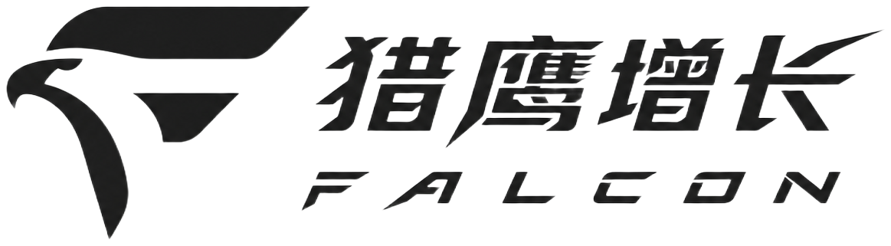

助力线索｜引流｜获客
光电项目真正该问的，不是「几次见效」
皮肤光电 · 成都 · 快档
该截的需求
截谁
有斑或皮肤问题、在小红书比过项目、怕被劝疗程、在意隐私的人。不是来问几次见效、非要看前后对比才肯约的。
别打谁
第一句问几次见效、要前后对比才约的
只要体验价、明确拒绝面诊的
要改外轮廓、大项目整形的。不是这家的场
他会这么说
我这个斑适不适合打
体验价到院怎么又不一样
必须做疗程吗
恢复期要躲几天
他在搜
光电项目多少钱 · 色素斑适不适合光电 · 光电恢复期几天 · 皮肤光电面诊问什么
我们看到的
效果被堵住还在打效果
现状
光电不能上前后对比、不能承诺次数、不能拿求美者证言。赛道仍大量在擦边讲「亮了」「细了」。
代价
轻则素材下架重投，重则账户受限。过审失败发生在花钱之前，是医美独有的漏水。
为什么改不动
内容还按化妆品广告在做。岗位没把审查办法当成创作大纲。
价格只给一个钩
现状
同样光电项目价差能到三倍。屏幕上一个体验价，到院被加层数、加部位、加护理。
代价
线索成本已经偏高。到院第一句是砍价，咨询变解释，到院率看着不差、成交难看。
为什么改不动
投放要低价点击，门店要疗程客单。素材不敢把层数和部位说清。
人设是机构不是医生
现状
医美最强背书是医生资质和把原理讲明白。赛道常见空间大片、仪器特写，医生不出镜或不署名。
代价
隐私顾虑重的人只问价不到院。企微询盘多、预约少。
为什么改不动
怕医生镜头僵，又怕署名后难换项目。于是继续拍店。
做皮肤光电这条路对。问题是赛道还在用效果说话，而效果图这条路已经被堵住。
样品 · 素材文案
做光电之前一定要问医生这一句：我这个斑适不适合打
别再花冤枉钱做这三个皮肤项目，第三个最容易被劝
仪器名听着新，先问注册证和适配症
面诊时把「必须做疗程吗」问出口，再听方案
同样的光电，为什么差价能到三倍
体验价背后这 3 项最容易被加上，第 1 项是层数
先要分项报价：部位、层数、护理各算什么
疗程不是套餐魔术。问清单次和疗程差在哪
没人告诉你的恢复期是这样的：红、干、结痂分别几天
重要场合前两周，这几类项目先别排
护理期断了，前面花的钱等于白做。这是过程，不是疗效承诺
进诊室只问三句：谁操作、证在哪、不适合会不会劝退
把适应症和禁忌症要写成纸，再预约
先别私信问「几次能好」。先约皮肤检测，把方案写下来
南岸做光电，先把分项报价拿走，再决定到院
怎么投
主战场
小红书 + 百度
测试路径
先测避坑问句，再测价格拆解，最后测医生科普。不测前后对比，过不了。
补给节奏
周产能按「过审条数」算，不是拍了几条。
下一步
先上「做之前问医生这一句」三条笔记。把过审失败的素材也给我，缺口一才能从判断升级成对比。